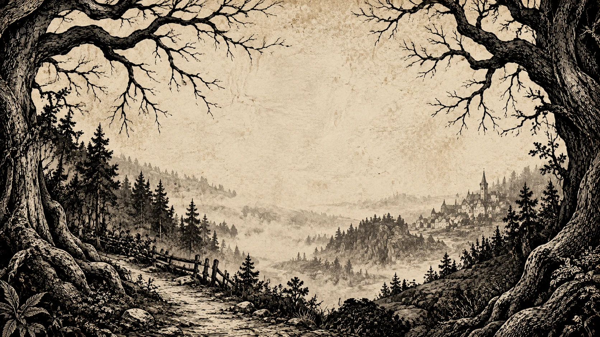
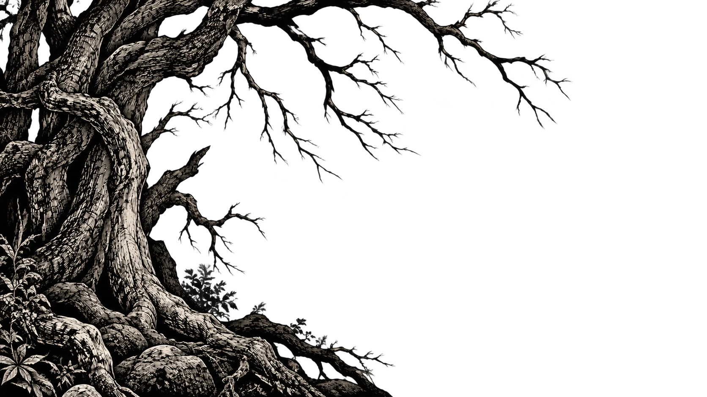
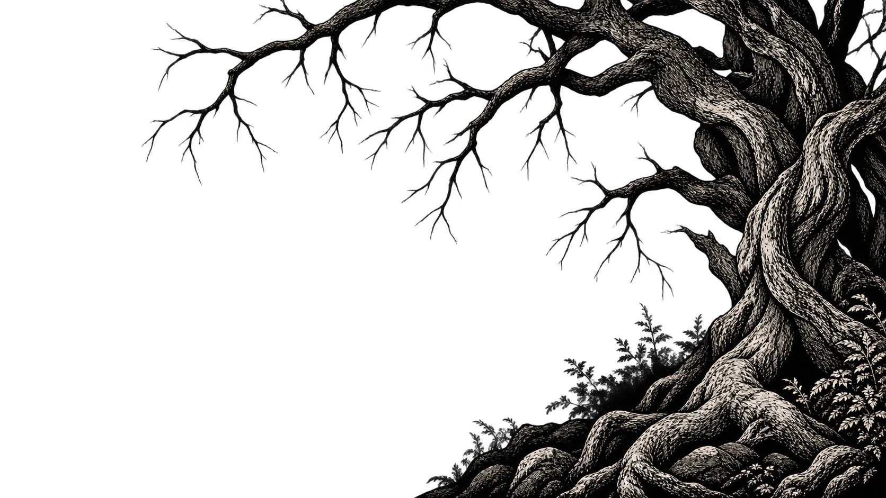
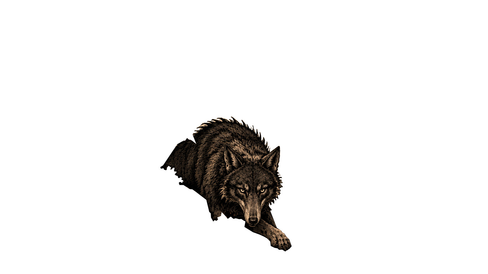

CHAPTER 01 / THE STORY
우리가 기억하는 동화
빨간모자는 할머니를 만나기 위해 숲으로 향합니다.
그곳에서 만난 늑대는 그녀보다 먼저 할머니의 집에 도착합니다.
하지만 우리가 알고 있는 결말은 처음부터 존재했던 것이 아닙니다.
“그 이야기에는 원래 사냥꾼이 없었습니다.”
1697년 샤를 페로의 문학판을 가리킵니다.
모든 초기 구전 설화가 같은 결말이었다는 뜻은 아닙니다.
그 숲에는 우리가 몰랐던 이야기가 숨어 있습니다.
빛을 움직여 숲을 들여다보세요빛이 머무는 숲을 들여다보세요
숲 이미지를 불러오지 못했습니다. 잠시 후 다시 방문해 주세요.



CHAPTER 01 / THE STORY
빨간모자는 할머니를 만나기 위해 숲으로 향합니다.
그곳에서 만난 늑대는 그녀보다 먼저 할머니의 집에 도착합니다.
하지만 우리가 알고 있는 결말은 처음부터 존재했던 것이 아닙니다.
“그 이야기에는 원래 사냥꾼이 없었습니다.”
1697년 샤를 페로의 문학판을 가리킵니다.
모든 초기 구전 설화가 같은 결말이었다는 뜻은 아닙니다.
FIVE CHAPTERS / THE FAMILIAR TALE
다섯 장의 삽화로 다시 읽는 빨간모자. 장면을 선택하면 이야기가 펼쳐집니다.
THE ORIGIN OF
LITTLE RED RIDING HOOD
우리가 아는 이야기는 어디에서 시작되었을까?
빨간모자는 처음부터 한 권의 책으로 태어난 이야기가 아니었다.
유럽 곳곳에서 구전되던 소녀와 늑대의 이야기가 시간을 거쳐 기록되고, 각 시대의 사회와 문화 속에서 다른 모습으로 변화해 왔다.
INTO THE BOOKS
샤를 페로는 1697년, 구전되던 빨간모자 이야기를 자신의 동화집에 수록했다.
이야기는 책을 통해 더 널리 알려졌고, 낯선 이를 경계하라는 교훈을 담은 문학 작품으로 자리 잡기 시작했다.
TWO VERSIONS,
TWO ENDINGS
같은 빨간모자, 그러나 서로 다른 결말.
페로의 이야기에서는 사냥꾼이 등장하지 않는다.
늑대가 빨간모자를 잡아먹고 이야기는 끝난다.
이야기는 소녀에게 경고를 남기는 교훈으로 전해졌다.
CHAPTER 04 / THE SYMBOLS
망토, 늑대, 표지판을 선택해 그 안에 담긴 이야기를 읽어보세요.

페로의 1697년 판본에서 소녀는 할머니가 만들어 준 빨간 두건 때문에 ‘빨간모자’라고 불립니다. 이 장면의 망토는 그 두건을 시각적으로 확장한 표현입니다.
이 전시에서는 숲의 어두운 색과 대비되는 붉은색을 소녀의 존재와 정체성을 드러내는 표식으로 읽습니다. 색에 부여하는 의미는 여러 해석 중 하나이며, 작품이 직접 밝힌 유일한 정답은 아닙니다.
페로는 이야기 끝의 교훈에서 ‘늑대’를 인간의 위험한 접근에 빗댑니다. 특히 부드럽게 말하고 친근하게 다가오는 존재도 경계해야 한다는 뜻을 드러냅니다.
따라서 늑대는 숲속의 포식자인 동시에 신뢰를 이용하는 상대의 상징으로 읽을 수 있습니다. 위협은 무서운 겉모습만으로 알아볼 수 있는 것이 아니라는 해석입니다.
페로 판본에서 늑대는 짧은 길로 달리고, 소녀는 꽃을 모으며 먼 길을 돌아갑니다. 두 인물이 서로 다른 길을 택하는 장면은 할머니의 집에 도착하는 순서를 바꿉니다.
이 장면의 표지판은 그 갈림길을 눈에 보이게 만든 전시 장치입니다. 여기에서는 길을 정보와 선택의 상징으로 해석합니다. 표지판 자체가 페로 원문에 등장하는 물건이라는 뜻은 아닙니다.
CHAPTER 05 — THE TALE CONTINUES
책의 마지막 장을 덮어도
이야기 속 숲은 우리 곁에 남아 있습니다
천천히 숲의 바깥으로
익숙한 길을 벗어나는 순간
처음 만나는 세상 앞에서
우리는 다시 빨간모자가 됩니다
때로는 다정한 말로
때로는 손쉬운 약속으로
우리는 누구의 목소리를 믿고 있을까요?
누군가가 정해 준 길과
스스로 걸어 보고 싶은 길 사이에서
다음 장을 쓰는 사람은 우리 자신입니다
THE END OF THE TALE THE BEGINNING OF YOURS
답은 이 책에 적혀 있지 않습니다
이야기를 처음부터 다시 읽기